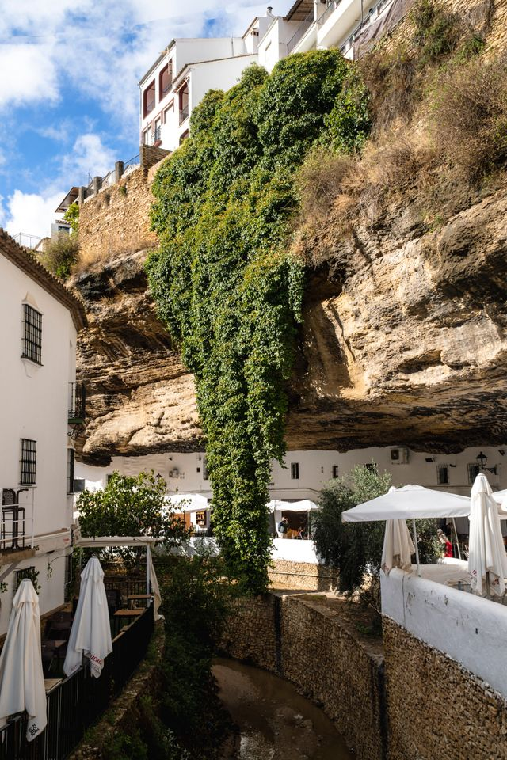

Setenil de las Bodegas es un municipio español de la provincia de Cádiz, Andalucía. Su entramado urbano está declarado conjunto histórico, cuyo centro está incrustado en el tajo formado por el río Guadalporcun a su paso por la localidad. Forma parte de la ruta de los pueblos blancos, y está conectado a la línea ferroviaria Bobadilla-Algeciras a través de la estación de Setenil. Se encuentra a una altitud de 640 metros y dista 157 kilómetros de la capital de provincia, Cádiz. En 2018 contaba con 2732 habitantes. La extensión de su término municipal es de 82 km² y tiene una densidad de 36,45 hab/km².Setenil de las Bodegas forma parte de la asociación Los Pueblos Más Bonitos de España desde el año 2019.
